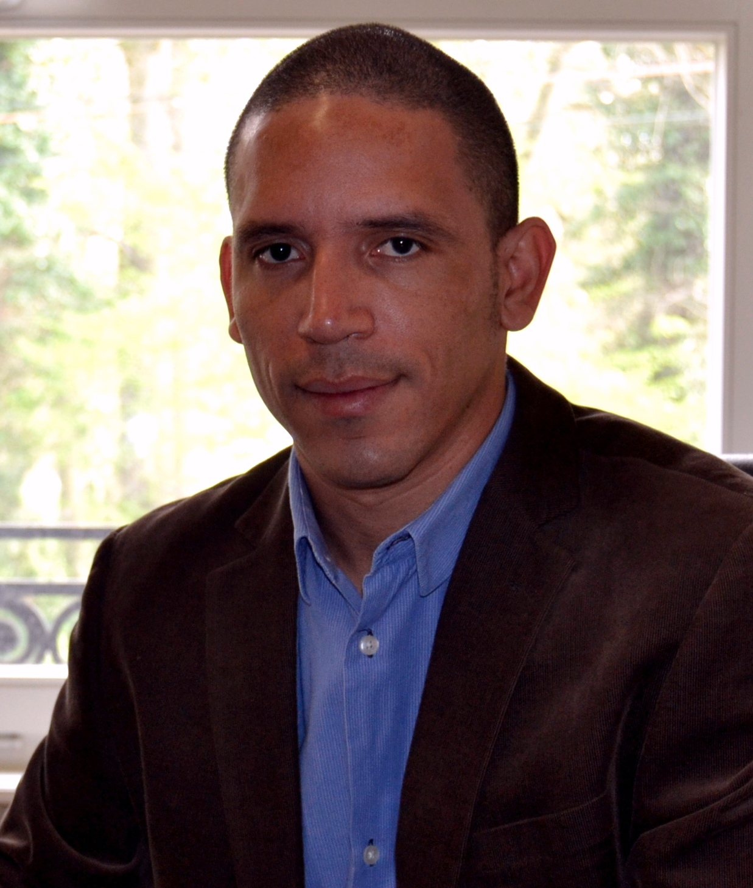

|  |
Dr. Ing. - Enrique CampbellSimulations expert I am an expert in intelligent water management. My experience includes more that 12 years of multi regional projects with strong focus on simulation of water suppy and sewer sytems. Have Ph.D. level studies and working experience in three differente languages. I Count on advanced programming skills which allows me to create self-costums tools. |
| Period | Experience |
|---|---|
| 2005-2007 | Enviromental Protection Agency (EPC) |
| 2007-2011 | Wasser Water Consultancy |
| R Studio | ★★★★★ | Photograpy | ★★★★☆ |
| Visual Basic | ★★★★★ | Logo design | ★★☆☆☆ |
| HTML | ★★★★★ | ||
| C Sharp | ★★★☆☆ | ||
| Python | ★★☆☆☆ |